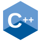

Thông tin cá nhân
- Họ và tên
- Trần Thị Thanh Trúc
- Ngành học
- Công nghệ thông tin
- Trường
- Đại học Bình Dương
- Nghề nghiệp
- Sinh viên
- 25050077@student.bdu.edu.vn
+ WELCOME TO MY SPACE
Trần Thị Thanh Trúc_
Chào bạn, mình là Trần Thị Thanh Trúc — sinh viên ngành Công nghệ thông tin tại Đại học Bình Dương.
+ Học hỏi, sáng tạo và phát triển mỗi ngày.
ABOUT ME
Mình là Thanh Trúc, một sinh viên yêu thích công nghệ, thiết kế và sáng tạo. Mình đặc biệt quan tâm đến việc xây dựng giao diện website hiện đại, kết hợp giữa tính thẩm mỹ và khả năng sử dụng thực tế. Mình thích biến những ý tưởng ban đầu thành sản phẩm cụ thể và luôn cố gắng tìm ra những cách làm mới để cải thiện chất lượng công việc.
NỀN TẢNG / ĐỊNH HƯỚNG / CÔNG NGHỆ
Một góc nhìn rõ hơn về mình, những điều đang học và mục tiêu phía trước.
Các ngôn ngữ và công nghệ trong hành trình khám phá lập trình.

C++Mình muốn phát triển theo hướng Front-end Developer, kết hợp kiến thức lập trình với tư duy thiết kế để tạo ra những sản phẩm có giao diện đẹp và trải nghiệm tốt. Mình cũng mong muốn được tham gia các dự án thực tế, làm việc với đội ngũ chuyên nghiệp và liên tục cập nhật kiến thức để phát triển sự nghiệp lâu dài.